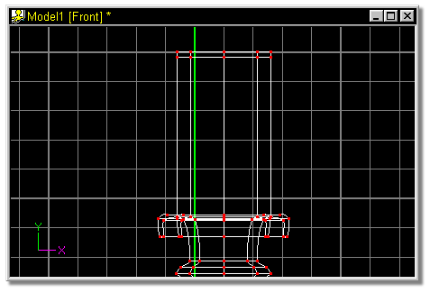
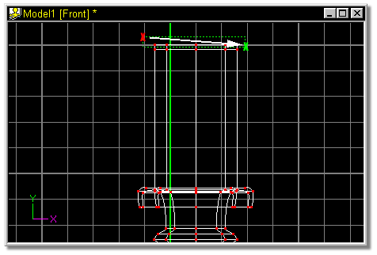
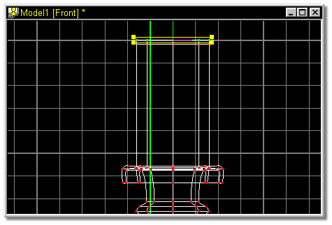

Figure 17 shows the newly lathed spline.


Figure 18
The screen should look similar to figure 19.

Figure 19
 Click the Lathe Button.
Click the Lathe Button.
 Click the Group button on the Tool panel and click near the top left of the
control points that make up the top of the candle (figure 18 - red X). While
holding the mouse button down, drag the mouse in the direction of the white arrow
until all of the points that make up the top cross section are inside the
bounding box. Release the mouse button (figure 18 - green X).
Click the Group button on the Tool panel and click near the top left of the
control points that make up the top of the candle (figure 18 - red X). While
holding the mouse button down, drag the mouse in the direction of the white arrow
until all of the points that make up the top cross section are inside the
bounding box. Release the mouse button (figure 18 - green X).